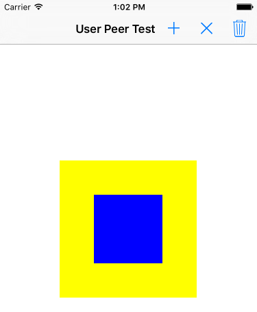

Duration
15 minutes
Goals
In this group exercise, we will identify a memory leak in a Xamarin.iOS application which is due to a user-peer reference cycle.
Assets
The provided Exercise 3 folder contains a sub-folder named Start with a pre-built Xamarin.iOS application which has a strong-reference cycle in it due to a user peer relationship.
Steps
Below are the step-by-step instructions to find and fix the reference cycle.
Run the application to see the issue
Let's start by familiarizing ourselves with the starter solution.
- Open the UserPeers.sln solution.
- Run the application to see what it does. It should show a blank screen with a toolbar with three buttons:
- "+" to add a custom view onto the screen.
- "X" to remove the custom view from the screen.
- "Trash" to perform a GC.
- If you press the "+" button, you will get a new view added to the screen: 
- You can tap on the rectangle to get it to change the color.
- Tapping the "X" button will remove it from the screen.
- Tapping the trash can icon will perform a GC. Notice that in the debug console you will see output as the object is created/destroyed:
- Create and destroy the view a few times - you should see the counter continuing to increase but it never goes down; we're leaking the custom view every time we add it.
CustomParentView created, 1 live instances CustomChildView created, 1 live instances Triggering GC.
Explore the source code
Next, lets look at the code for the application to see if we can identify the issue.
-
Expand the solution contents.
- It has a single main
ViewController. which provides the main screen you interact with. - It has a Views folder which contains two custom view derived classes. Both of these report their total live instances as they are created or disposed.
- It has a single main
- The ViewController.cs class is what adds and removes the view. Check to make sure it's removing the subview and ensuring it doesn't hold a live reference.
- Next, check the parent and child views to see how the relationships are held between them. Notice that the child view holds a strong reference to the parent view so it can change the background fill color when it's touched.
- Recall from the lecture that managed to native circular references cause issues in Xamarin.iOS due to the difference in how memory is handled between Mono and iOS.
Approaches to fixing the leak.
There are multiple ways to fix this problem. Let's try each one in turn.
-
First, the easiest way to fix the problem is to force the parent to be disposed. Open the ViewController.cs source file and locate the method where we remove the subview. Add a call to
Disposebefore setting the field to null. - Run the app and see if it cleans up the view - add and remove a few subviews and force GCs to make sure the counter always ends up at zero.
-
That's an easy fix, but it requires that our client correct the issue - really the problem is in the parent/child relationship established by the custom views. Remove the call to
Disposeand let's see if we can fix it in the child views. -
Override the
RemoveFromSuperviewmethod on the CustomParentView.cs class - when it's invoked, get the child from theSubviewscollection and set it'sParentproperty tonull. - Run the app again and verify that this new approach also solves the problem.
-
There is a third solution to this problem - see if you can remove the direct managed dependency from
CustomChildViewtoCustomParentViewby changing how you retrieve your parent. See the final completed solution for this approach.
Summary
In this exercise, we fixed a circular reference problem with Xamarin.iOS where a parent/child relationship caused a View hierarchy to get held in memory. There is a Completed solution in the Exercise 3 folder if you'd like to see the final approach.